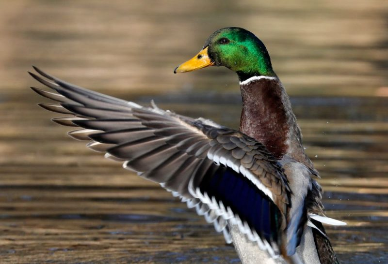

Teksts
Klikšķini šeit, lai atvērtu vikipēdijuPar pīli sauc daļu pīļu dzimtas (Anatidae) putnu. Pīļu dzimta ir plaša, un tai ir vairākas apakšdzimtas, no kurām 8 apakšdzimtās tiek sistematizētas dažādu sugu pīles. Visas pīles ir ūdensputni, un tās dzīvo gan saldūdenī, gan sālsūdenī. Tās ir vidēji lieli putni, bet mazākas kā gulbji un zosis. Latviešu valodā dažas pīļu sugas tiek sauktas arī par gaurām, gaigalām, kākauļiem, ķerrām un krīkļiem. Dažu apakšdzimtu pīļu sugas tiek sauktas par zosīm, kā piešspārnu zosis un svilpējzosis, lai gan patiesībā tās ir liela auguma pīles.
| Pirmdiena | Otrdiena | Trešdiena | Ceturdiena | Piekdiena |
|---|---|---|---|---|
| Bioloģija | Matemātika | Fizika | Sports | - |
| Bioloģija | Matemātika | Fizika | Sports | - |
| Vēsture | Ķīmija | Angļu val. | Robotika | Vēsture |
| Matemātika | Ķīmija | Angļu val. | Robotika | Matemātika |
| Latviešu val. | Angļu val. | Literatūra | Matemātika | Bioloģija |
| - | - | - | Matemātika | Kultūras p. |
| Sports | Ltviešu val. | Literatūra | - | - |
| Krievu val. | Kultūras p. | Klases st. | Digitālais diz. | Programmēšana |
| Krievu val. | - | Programmēšana | Digitālais diz. | Programmēšana |